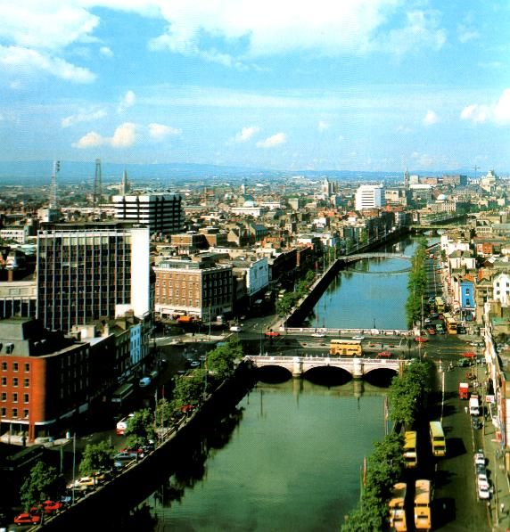
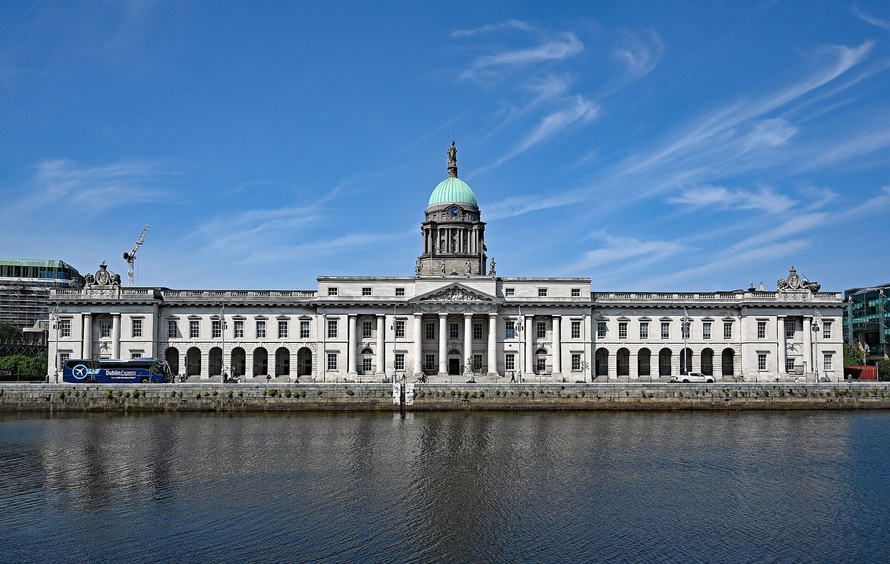

Five thousand years
Ireland through the centuries
Ireland's past is a tapestry woven from many threads — ancient myths, invasions and migrations, faith, famine, resistance and renewal. From the first Neolithic settlers to the modern-day republic, each century has left its mark on the island's culture, language and spirit.

In the name of God and of the dead generations from which she receives her old tradition of nationhood, Ireland, through us, summons her children to her flag and strikes for her freedom.
The Proclamation of the Irish Republic, 1916
Prehistory and the Celts
The first farmers reached Ireland about six thousand years ago, clearing forest with stone axes and building the great passage tombs at Newgrange, Knowth and Dowth. They were followed by the Bronze Age metalworkers, who traded copper and gold as far as Scandinavia, and then by the Celts.
The Celts arrived in the last centuries before Christ, bringing iron, a warrior aristocracy and a language that survives — in changed form — as Irish, Scottish Gaelic and Manx. They never built cities or a single kingdom; Ireland was a patchwork of perhaps one hundred and fifty small tuatha, each with its own king.
What they did build was a culture of oral learning. Law, genealogy, poetry and history were memorised and recited by professional classes — druids, poets and lawyers — for more than a thousand years before anything was written down.
Early Christian Ireland
Christianity reached Ireland in the fifth century, traditionally through St Patrick, a Romano-British slave who escaped captivity and returned as a bishop. It spread without cities and without Roman roads, so it settled into the countryside instead: monasteries became the centres of Irish life.
Through the sixth and seventh centuries, Clonmacnoise, Clonard, Glendalough, Kildare and Iona grew into small towns of scholars and craftsmen. Irish monks copied and preserved Latin learning through the centuries when much of Europe was losing it, and then set out — to Scotland, Northumbria and across the continent — to teach it back.
The period produced the Book of Kells, the high crosses, the round towers and the ogham stones, and it produced a distinctive Irish Christianity in which monasteries, not bishops, held the power.

The Viking Age
The first Viking raid on Ireland was recorded in 795, on the island of Lambay. What followed was not simply destruction: the Norse founded Ireland's first towns. Dublin, Waterford, Wexford, Cork and Limerick all began as Viking trading settlements at river mouths.
They also founded the trade that made those towns rich — silver, slaves, hides and wool moving between Ireland, Scandinavia and the Arab world. Excavations in Dublin have uncovered whole streets of Viking houses, workshops and quays from the tenth century.
The Vikings were defeated militarily at Clontarf in 1014 by Brian Boru, the first king to claim rule over the whole island, though he was killed in the battle. The towns they built outlived them and became the framework of Irish urban life.

The Norman Invasion
In 1169 a small force of Norman knights landed in Wexford at the invitation of an exiled Irish king. Within two years they had taken Dublin, and within a century they held most of the island's best land.
The Normans brought castles, walled towns, manors, a money economy and a new language. They also brought a new political idea: a centralised lordship claiming authority over the whole island, which the English crown inherited and never let go.
The invasion did not produce a clean conquest. Many Norman families went native within a few generations — speaking Irish, marrying Irish, adopting Irish law — and by 1300 the colony was in retreat, confined to an area around Dublin known as the Pale.

Medieval Ireland
The late Middle Ages in Ireland were neither peace nor war, but something in between: two legal systems, two languages and two societies sharing one island, with the boundary between them moving constantly.
Outside the Pale, the Irish lords rebuilt their power after the Norman setback. The O'Neills of Tyrone, the O'Briens of Thomond, the MacCarthys of Desmond and the MacDonnells of Antrim ran their own territories, held their own courts and, increasingly, hired gallowglass warriors from Scotland.
Trade and town life continued to grow through it all. Kilkenny, Galway, Drogheda and Cork became wealthy merchant towns with their own charters, and the monasteries remained the centres of learning until their dissolution in the 1540s.

Plantations and rebellion
From the 1550s the English crown changed its method: instead of trying to govern Ireland through Irish lords, it set out to replace them by settling English and Scottish Protestants on confiscated land. Munster, Laois, Offaly and Ulster were planted in turn.
The Ulster Plantation of 1609 was the largest and the most consequential. It created a Protestant settler population that still shapes the north of the island, and it produced the deep grievance that runs through the next four centuries.
Resistance was continuous. The rebellion of 1641, the Cromwellian conquest and its land confiscations, and finally the war of 1689–91 between James II and William III, which ended with the Treaty of Limerick in 1691, broke the old Catholic landowning class almost entirely. By 1703, Catholics owned about seven per cent of Irish land.

The eighteenth century
For the Protestant minority, the eighteenth century was Dublin's golden age. The Penal Laws stripped Catholics and Presbyterians of property, education, arms and political office, while the landed class built the Georgian city — the Custom House, the Four Courts, Trinity College, the wide squares.
Behind that elegance, the countryside was organised around export: beef and butter to Britain, and linen from the north. A poor harvest in 1740–41, remembered as Bliain an Áir, the Year of the Slaughter, killed perhaps a quarter of a million people — a disaster larger than most of Europe's.
At the end of the century came the first attempt at real political change. Inspired by the American and French revolutions, the United Irishmen — Protestant and Catholic together — rose in 1798. The rebellion failed, and its suppression was bloody enough that London decided on a permanent solution.

Independence and modern Ireland
The Act of Union of 1801 abolished the Irish parliament and joined Ireland to Britain outright. The nineteenth century then delivered two disasters in a row: the Great Famine of 1845–49, in which about a million people died and another million emigrated, and a century of emigration that halved the population.
The independence movement grew slowly out of land reform, the language revival and the Home Rule campaigns. It broke open with the Easter Rising of 1916, the War of Independence of 1919–21, and then the Treaty of 1921, which created the Irish Free State — and, with the six counties of Ulster, the partition that still divides the island.
The republic that followed was poor, rural and socially conservative for most of the twentieth century. That changed from the 1960s onwards: free secondary education, EU membership in 1973, foreign investment, and finally the Celtic Tiger of the 1990s and the Good Friday Agreement of 1998. Ireland today is a European capital with a diaspora of seventy million.

Explore the key chapters of Ireland's journey through time, and discover the places and events that shaped the nation we know today.